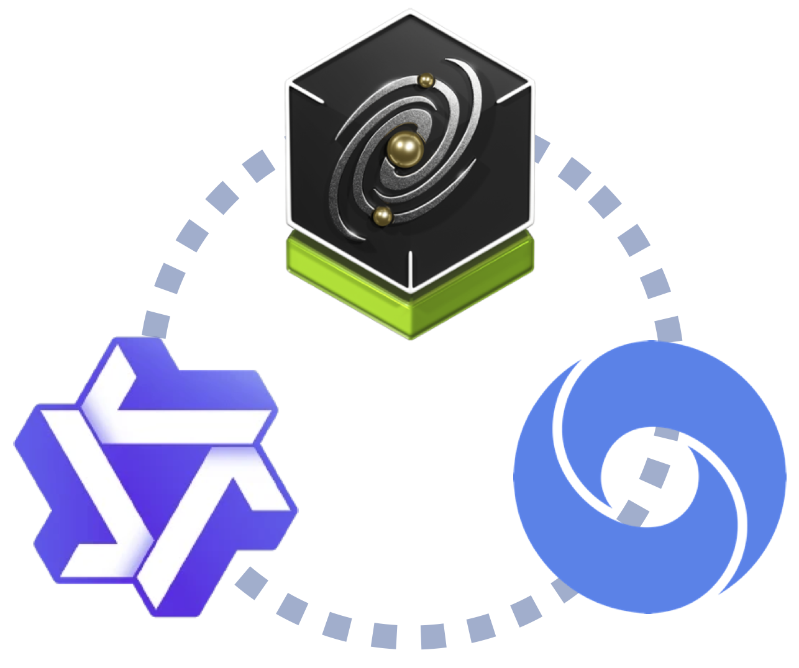
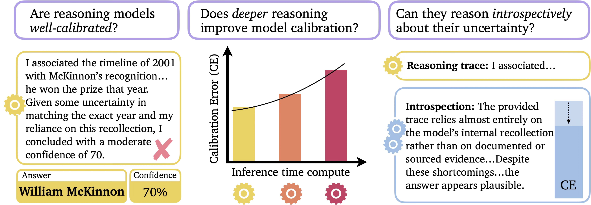
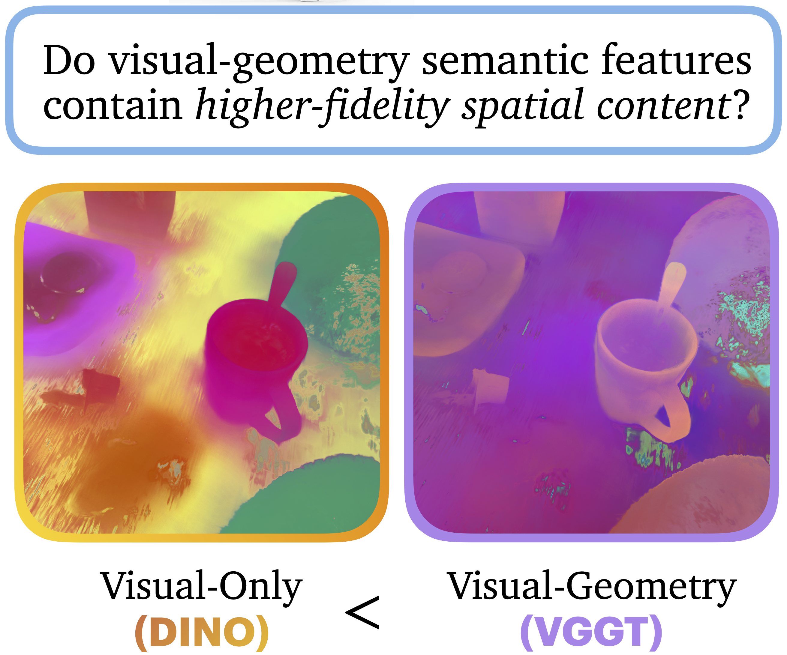
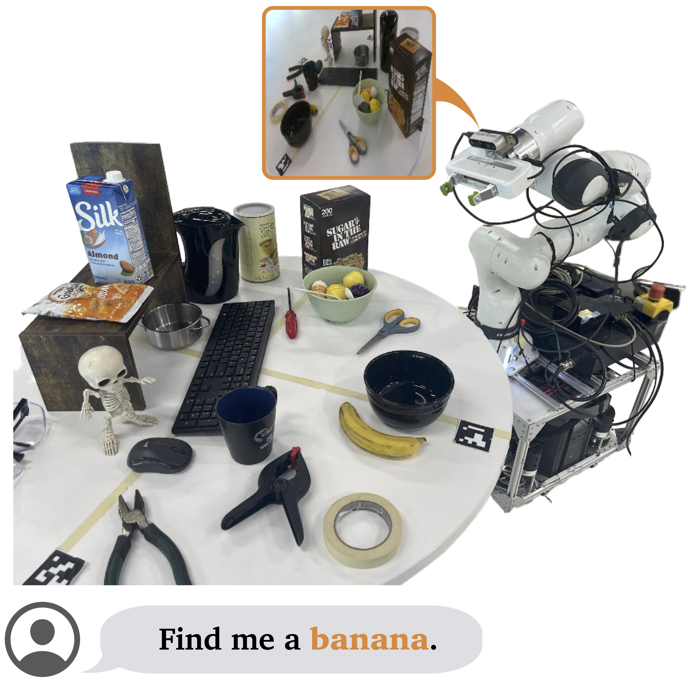
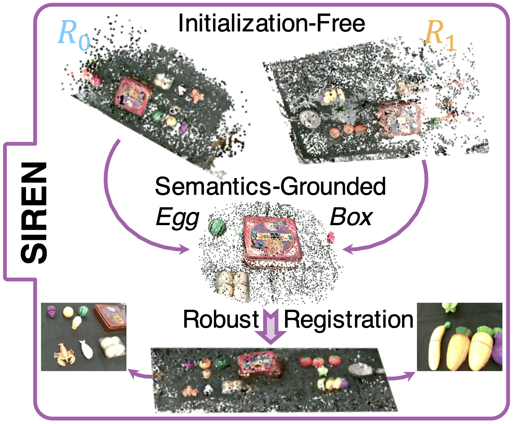
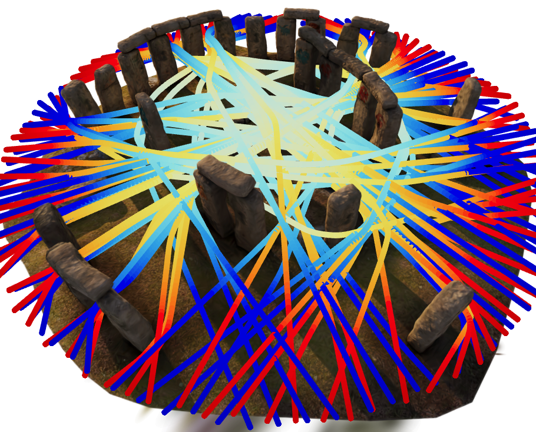
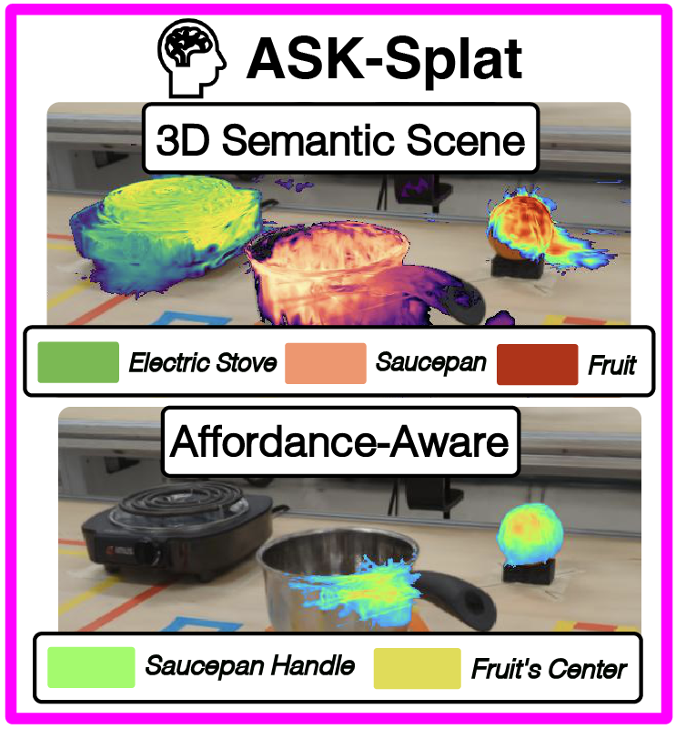

|
Ola Shorinwa
Hello! I'm a postdoctoral associate at IRoM Lab
in Princeton Robotics.
My research vision seeks to empower artificial intelligence (AI)-enabled robots to
know when to collaborate and how best to collaborate with others based on
the trustworthiness of their AI core, particularly in complex tasks that may be
too difficult for a single robot to accomplish.
To realize this goal, my work
synthesizes robust algorithms blending uncertainty quantification theory, expressive world
modeling with high-fidelity 3D reconstruction techniques, and provably optimal
distributed optimization.
Email
|
|

|
How Confident are Video Models? Empowering Video Models to Express their
Uncertainty
Zhiting Mei*,
Ola Shorinwa*,
Anirudha Majumdar
Under Review, 2025
Paper
|
|

|
Reasoning about Uncertainty: Do Reasoning Models Know When They Don't
Know?
Zhiting Mei*,
Christina Zhang,
Tenny Yin,
Justin Lidard,
Ola Shorinwa*,
Anirudha Majumdar
Under Review, 2025
Paper
|
|

|
Geometry Meets Vision: Revisiting Pretrained Semantics in Distilled
Fields
Zhiting Mei*,
Ola Shorinwa*,
Anirudha Majumdar
Under Review, 2025
Paper
|
|

|
WoMAP: World Models For Embodied Open-Vocabulary Object Localization
Tenny Yin*,
Zhiting Mei,
Tao Sun,
Lihan Zha,
Emily Zhou,
Jeremy Bao,
Miyu Yamane,
Ola Shorinwa*,
Anirudha Majumdar
Conference on Robot Learning (CoRL), 2025
Best Paper Award, RSS 2025 SWoMo and SemRob workshops
Webpage / Paper / Video
|
|

|
SIREN: Semantic, Initialization-Free Registration of Multi-Robot Gaussian
Splatting
Maps
Ola Shorinwa,
Jiankai Sun,
Mac Schwager
Anirudha Majumdar
Conference on Robot Learning (CoRL), 2025
Paper
|
|

|
Splat-Nav: Safe Real-Time Robot Navigation in Gaussian Splatting
Maps
Timothy Chen*,
Ola Shorinwa*,
Joseph Bruno,
Aiden Swann,
Javier Yu,
Weijia Zeng,
Keiko Nagami,
Philip
Dames,
Mac Schwager
Transactions on Robotics (T-RO), 2025
Paper
|
|

|
Splat-MOVER: Multi-Stage, Open-Vocabulary Robotic Manipulation via Editable
Gaussian Splatting
Ola Shorinwa*,
Johnathan
Tucker*,
Aliyah Smith,
Aiden Swann,
Timothy Chen,
Roya
Firoozi,
Monroe Kennedy
III,
Mac Schwager
Conference on Robot Learning (CoRL), 2024
Paper
|
Website template from here.
|
|